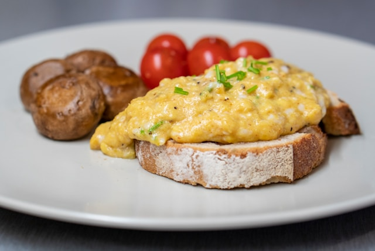

Home
French-Style Scrambled Eggs

French-Style Scrambled Eggs
French scrambled eggs are known for their incredibly soft, almost creamy texture with tiny, delicate curds. Contrast to American-style scrambled eggs, they are cooked slowly, over low heat with a constant, gentle stirring to create a smooth, velvety sauce, rather than distinct, larger curds. The process involves gradually setting the eggs to a nearly undercooked state before they are finished with butter, cream, or crème fraîche for extra richness and a balanced flavor.
Ingredients:
- 4 large eggs
- 2 tbsp unsalted butter, softened and divided
- 2 tbsp crème fraîche or heavy cream (optional, for extra richness)
- 1 tbsp fresh chives, finely chopped
- Kosher salt and freshly ground black pepper to taste
- Country-style bread or toast for serving
Instructions:
- Beat the eggs. Crack the eggs into a bowl. Add a pinch of salt and pepper and whisk until the yolks and whites are fully incorporated and the mixture is uniformly yellow.
- Melt the butter. Place a small saucepan over low heat. Add 1 tablespoon of softened butter and allow it to melt until foamy.
- Cook slowly. Pour the egg mixture into the pan. Stir constantly with a spatula, scraping the bottom and sides of the pan to prevent large curds from forming. For the first few minutes, the eggs will seem very liquid.
- Manage the heat. As the eggs begin to thicken into a creamy custard, continue stirring. If they are cooking too quickly, life the pan off the heat for a few moments to slow the cooking process, then return to the burner.
- Achieve the perfect texture. Cook until the eggs are almost set but still a bit loose and slightly runny. They will continue to cook from residual heat after being removed from teh stove.
- Finish with butter or cream. Remove the pan from the heat. Cute the remaining tablespoon of softened butter and stir it into the eggs until melted and fully incorporated. If using crème fraîche or cream, stir it in now to add extra richness and cool the eggs.
- Add final touches. Stir in most of the chopped chives and season with additional salt and pepper if needed.
- Serve immediately. Spoon the eggs onto warm toast and garnish with the remaining chives. Serve at once while warm and creamy.